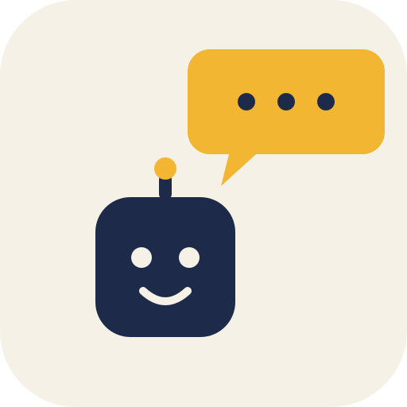

En pytteliten språkmodell som skriver svenska. Tränad från grunden på en laptop. Allt här körs i din webbläsare, inget skickas någonstans.
Samma början, samma slumpfrö, sex modeller. Dra i reglaget och se språket ta form: från lösa meningar vid 0,3 miljoner parametrar till en saga vid 7.
Sagorna blir ofta lite konstiga. Modellerna kan grammatiken men tappar lätt tråden, och de har bara läst sagor om barn i vardagen. Börja med en räv som vill flyga, så handlar sagan snart om ett barn i stället. Prova gärna: det är så man ser var gränsen går.
Be om en saga: Berätta en saga om Freja och en katt som utspelar sig på en bondgård. Fråga sedan Vad händer sedan? Pytte kan bara en sak, sagor för små barn. Sagorna handlar om ett barn, och Pytte följer namnet och platsen du ger oftare än föremålet.
Modellen ser inte bokstäver utan token: bitar av ord som tokeniseraren lärt sig från sagorna. Skriv något och se hur det delas upp, och vilka token modellen tror kommer sedan.